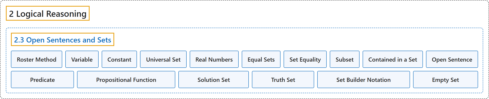

2.3 Open Sentences and Sets
Classification

Glossary
| Term | Definition | 中文翻译 | Source |
|---|---|---|---|
| 2 Logical Reasoning 逻辑推理 |
(No definition) | （无定义） | Sundstrom, 2022, chapter 2 |
| 2.3 Open Sentences and Sets 开语句与集合 |
(No definition) | （无定义） | Sundstrom, 2022, section 2.3 |
| Roster Method 列举法 |
"Listing the elements of a set inside braces is called the roster method of specifying the elements of the set." | 把集合的元素列在花括号内，称为表示集合元素的列举法。 | Sundstrom, 2022, section 2.3 |
| Variable 变量 |
"A variable is a symbol representing an unspecified object that can be chosen from a given set \(U\text{.}\)" | 变量是代表一个未指定对象的符号，该对象可以从给定集合 \(U\) 中选取。 | Sundstrom, 2022, section 2.3 |
| Constant 常量 |
"A constant is a specific member of the universal set." | 常量是全集中的一个特定成员。 | Sundstrom, 2022, section 2.3 |
| Universal Set 全集 |
"The set \(U\) is called the universal set for the variable. It is the set of specified objects from which objects may be chosen to substitute for the variable." | 集合 \(U\) 称为该变量的全集。它是一组指定的对象，可从中选取对象来代入变量。 | Sundstrom, 2022, section 2.3 |
| Real Numbers 实数 |
"Recall that we use the symbol \(\mathbb{R}\) to stand for the set of all real numbers" | 回想一下，我们用符号 \(\mathbb{R}\) 表示全体实数的集合 | Sundstrom, 2022, section 2.3 |
| Equal Sets 相等集合 |
"Two sets, \(A\) and \(B\text{,}\) are equal when they have precisely the same elements. In this case, we write \(A = B\)." | 两个集合 \(A\) 和 \(B\) 的元素完全相同时，它们相等。这时记作 \(A = B\)。 | Sundstrom, 2022, section 2.3 |
| Set Equality 集合相等 |
"Two sets, \(A\) and \(B\text{,}\) are equal when they have precisely the same elements. In this case, we write \(A = B\)." | 两个集合 \(A\) 和 \(B\) 的元素完全相同时，它们相等。这时记作 \(A = B\)。 | Sundstrom, 2022, section 2.3 |
| Subset 子集 |
"The set \(A\) is a subset of a set \(B\) provided that each element of \(A\) is an element of \(B\text{.}\) In this case, we write \(A \subseteq B\) and also say that \(A\) is contained in \(B\text{.}\)" | 如果 \(A\) 的每个元素都是 \(B\) 的元素，集合 \(A\) 就是集合 \(B\) 的子集。这时记作 \(A \subseteq B\)，也说 \(A\) 包含于 \(B\)。 | Sundstrom, 2022, section 2.3 |
| Contained in a Set 包含于集合 |
"In this case, we write \(A \subseteq B\) and also say that \(A\) is contained in \(B\text{.}\)" | 这时记作 \(A \subseteq B\)，也说 \(A\) 包含于 \(B\)。 | Sundstrom, 2022, section 2.3 |
| Open Sentence 开语句 |
"An open sentence is a sentence \(P( {x_1 ,x_2 , \ldots ,x_n })\) involving variables \(x_1 ,x_2 , \ldots ,x_n\) with the property that when specific values from the universal set are assigned to \(x_1 ,x_2 , \ldots ,x_n\text{,}\) then the resulting sentence is either true or false." | 开语句是含有变量 \(x_1 ,x_2 , \ldots ,x_n\) 的语句 \(P( {x_1 ,x_2 , \ldots ,x_n })\)，具有这样的性质：把全集中的具体值赋给 \(x_1 ,x_2 , \ldots ,x_n\) 后，所得语句要么真要么假。 | Sundstrom, 2022, section 2.3 |
| Predicate 谓词 |
"An open sentence is also called a predicate or a propositional function." | 开语句也称为谓词或命题函数。 | Sundstrom, 2022, section 2.3 |
| Propositional Function 命题函数 |
"An open sentence is also called a predicate or a propositional function." | 开语句也称为谓词或命题函数。 | Sundstrom, 2022, section 2.3 |
| Solution Set 解集 |
"In more formal terms, the process of solving an equation is a way to determine the truth set for the equation, which is an open sentence. In this case, we often call the truth set the solution set." | 更正式地说，解方程的过程是确定该方程真值集的一种方法，而方程是开语句。这时我们常把真值集称为解集。 | Sundstrom, 2022, section 2.3 |
| Truth Set 真值集 |
"The truth set of an open sentence with one variable is the collection of objects in the universal set that can be substituted for the variable to make the predicate a true statement." | 单变量开语句的真值集是全集中能代入该变量、使谓词成为真陈述的那些对象的全体。 | Sundstrom, 2022, section 2.3 |
| Set Builder Notation 集合构造记号 |
"In this case, it is sometimes convenient to use the so-called set builder notation in which the set is defined by stating a rule that all elements of the set must satisfy." | 这时，有时用所谓的集合构造记号比较方便，即通过陈述集合所有元素都必须满足的规则来定义集合。 | Sundstrom, 2022, section 2.3 |
| Empty Set 空集 |
"When a set contains no elements, we say that the set is the empty set." | 当一个集合不含任何元素时，我们说它是空集。 | Sundstrom, 2022, section 2.3 |
References
Sundstrom, T. (2022). Mathematical reasoning: Writing and proof (Version 2.1; PreTeXt edition by Grand Valley State University). Retrieved October 30, 2026, from https://gvsuoer.github.io/sundstrom-textbook/frontmatter.html